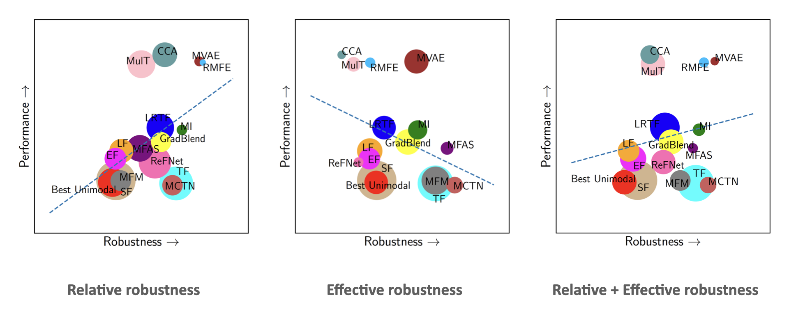

MultiBench: Robustness
Robustness measures the effect on model’s decision by small disturbations on the input data that are often indistinguishable to human observers. A model tends to be unrobust when its decisions rely on insignificant features and thus experiences a more drastic performance drop when evaluated on noisy datasets. Therefore, robustness is an important measure of the alignment between model and human decisions. Tsipras, Dimitris et al. and Zhang et al. have shown that there exists a tradeoff between natural accuracy and robustness.
For this project, I worked on robustness evaluation in the multimodal setting. I worked with Paul Liang, identified modality-specific and multimodal imperfections, developed evaluation metrics for multimodal robustness and integrate them into a unified large-scale benchmark, MultiBench, that assesses generalization, complexity, and robustness of multimodal models.

We visualize the robustness of common multimodal models using two metrics (Taori et al.), relative and effective robustness, as well as a combination of both. The relative robustness measures the absolute accuracy under imperfections while the effective robustness measures the rate of accuracy drops after equalizing for initial accuracy on clean test data. The robustness plots above indicate the tradeoff between accuracy and robustness.
We have submitted the paper to NeurIPS 2021 Track Datasets and Benchmarks Round1.
References
- Rohan Taori, Achal Dave, Vaishaal Shankar, Nicholas Carlini, Benjamin Recht, and Ludwig Schmidt Measuring robustness to natural distribution shifts in image classification. NeurIPS, 2020.
- Dimitris Tsipras, Shibani Santurkar, Logan Engstrom, Alexander Turner, and Aleksander Madry. Robustness may be at odds with accuracy. ICLR, 2019.
- Hongyang Zhang, Yaodong Yu, Jiantao Jiao, Eric P. Xing, Laurent El Ghaoui, and Michael I. Jordan. Theoretically principled trade-off between robustness and accuracy. ICML, 2019.